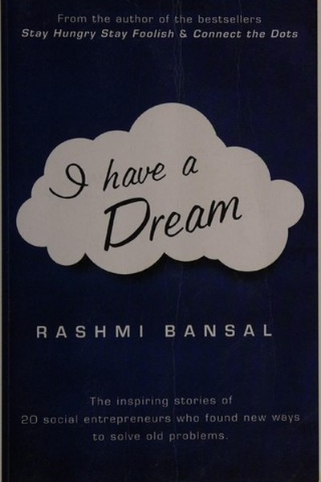

Library › Business & Startups
I Have a Dream — Summary & Key Lessons

Social entrepreneurs who made mission pay.
📖 OPEN THE FULL INTERACTIVE BREAKDOWN →🌐 Read it in Hindi, Hinglish, Gujarati, Tamil & 22 more languages — free, with audio.
💡 The Big Idea
Rashmi Bansal's third book profiles social entrepreneurs — Indians who built businesses with a mission beyond profit: education for slum kids, solar power for villages, healthcare for the poor. Her message: you don't have to choose between making money and changing the world — the best social enterprises do both, because a sustainable mission needs a sustainable business. The dreamers in this book prove that India's biggest problems are its biggest business opportunities, and that the entrepreneur's heart matters as much as the entrepreneur's spreadsheet.
🧠 The 6 Key Lessons
Lesson 1: The Dream That Pays: Mission and Margin Together
Part 1: The Dreamers
Bansal's founders refuse the false choice between profit and purpose. The school that charges slum parents a little but delivers real learning, the solar company that sells to villages at a margin — each proves that a mission without a business model dies, and a business without a mission hollows out. The lesson: don't choose between doing good and doing well; design the model where the good IS the business. The most durable social change is the kind that pays for itself, because it can scale without depending on donations forever.
📖 Example: Bansal profiles an education venture that charges the poor a small fee and delivers quality — profitable enough to grow, mission-driven enough to matter. The fee was the discipline; the mission was the fuel. Read the full example →
⚡ Do this: Redesign one idea as 'mission + margin': who pays, what changes, and how the two reinforce each other? Write the one-line model.
Lesson 2: The Slow Road: Social Change Doesn't Move at Startup Speed
Part 2: The Pace
These founders measure progress in years, not quarters — winning trust in a village, changing a habit, building a school that survives its founder. Bansal's lesson: the most important problems resist the 'move fast and break things' playbook; they reward patience and trust. The lesson isn't 'go slow' but 'match your pace to the problem': quick wins for product problems, patient compounding for people problems. The founder who treats a community like a market to be hacked will be rejected; the one who treats it like a family to be served earns loyalty no competitor can buy.
📖 Example: A founder Bansal profiles spent years earning a village's trust before her health program took root — the slow phase looked like failure and was actually the entire strategy. Read the full example →
⚡ Do this: Identify one 'people problem' in your work that needs patience, not speed. Redefine success for it as trust built, not tasks done.
Lesson 3: The Founder's Fire: Mission Sustains What Money Can't
Part 3: The Fuel
When these ventures faced crises — funding gaps, burnout, betrayal — what kept them going was not the business plan but the fire: a personal connection to the problem. Bansal shows that mission-driven founders persist through failures that purely commercial founders abandon, because the failure isn't just theirs — it's the community's too. The lesson: choose problems you personally care about, because the care is the capital that survives the dark years. The founder whose motivation is deep survives the shallow times; the one whose motivation is shallow quits at the first valley.
📖 Example: One founder, facing collapse, sold his own house to keep the school running — an act no investor spreadsheet explains, only the fire does. The mission was the balance sheet that mattered. Read the full example →
⚡ Do this: Write the problem you care about most and why it's personal. Re-read it the next time motivation dips — the fire is the fuel.
Lesson 4: Funding Is a Means: Don't Let the Money Own the Mission
Part 4: The Money
Bansal's founders navigate the grant-versus-business tension: grants can distort (you serve the donor's metrics) and investors can distort (you chase the exit). Her lesson: funding is fuel, not direction — the founder who lets the money set the mission ends up with someone else's dream. The discipline: know your non-negotiables before you raise money, and choose funders who buy your vision rather than renting it. The same applies to any venture: the capital that comes with strings pulls the steering wheel; keep your hand on it.
📖 Example: A founder refused a large grant that required abandoning her core program — the grant would have doubled her budget and halved her mission. The refusal looked foolish; the mission survived. Read the full example →
⚡ Do this: List your non-negotiables before any funding or big partnership. Refuse any money that would break them — write the refusal criteria now.
Lesson 5: The Ripple: One Person's Dream Becomes Many Lives
Part 5: The Impact
Bansal's closing portraits show impact as a ripple: the student who becomes a teacher, the villager who becomes a trainer, the community that stops needing the NGO. The lesson: the deepest success metric is not output but independence — have you made yourself unnecessary? The leader, teacher or founder whose work empowers others to stand alone has created the only growth that lasts. The ripple is the proof: when the dream becomes many people's, it was never just yours.
📖 Example: The school that trained its own teachers, the solar company whose technicians were villagers — each built the exit of its own dependency. The founder's greatest achievement was becoming optional. Read the full example →
⚡ Do this: Define success as independence: what would it look like if your team, students or community stopped needing you? Build one 'exit of dependency' this quarter.
Lesson 6: The Dream Is the Business Plan: Start With Why You Care
Part 6: The Beginning
Every founder in the book started the same way: with a problem they couldn't ignore, not a market they researched. Bansal's final lesson: the best business plans begin as personal outrage or love, and the plan comes after. The lesson: stop waiting for the perfect pitch; start with the thing you can't stop thinking about. The market research matters later; the care matters first. The dream is not the enemy of the business plan — it is the seed the plan grows from. If you don't dream it first, you'll never plan it properly.
📖 Example: Bansal's founders routinely began with one angry question — 'why do these kids not have schools?' — and the organizations grew from the question, not from a consulting report. Read the full example →
⚡ Do this: Write the one problem that keeps you awake. That's your seed — sketch the smallest possible version of the answer this week.
✅ 5-Step Action Plan
- Write your 'mission + margin' model in one line.
- Match your pace to the problem — patience for people problems.
- Identify your personal fire and keep it visible.
- List your non-negotiables before taking any money.
- Start with the problem you can't ignore — sketch the smallest answer.
💬 Best Quotes from I Have a Dream
- “The most durable social change is the kind that pays for itself.”
- “The care is the capital that survives the dark years.”
- “Your greatest achievement is making yourself unnecessary.”
Interactive version: mark lessons as read, listen in your language, share quote cards.